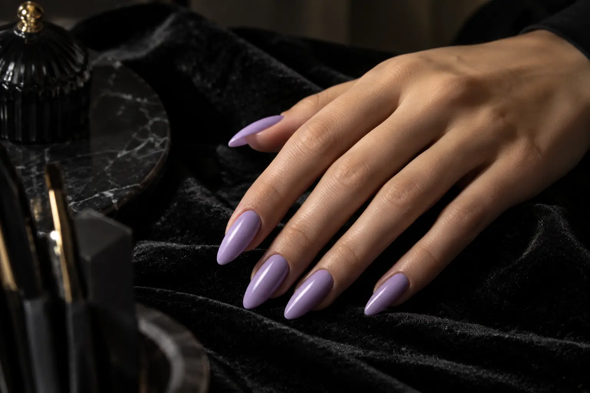

Nagų priauginimo gidas: ilgio kūrimas, konstrukcija ir papildymas
Autorius: Madbeauty redakcija · Numatyta 2026 m. lapkričio 9 d. 10:00 (Lietuvos laiku)
Likusi patikra prieš publikavimą
- Plane aiškiai numatyta patikra dar neatlikta: „Sistemų dokumentai ir nagų specialisto review“. Reikia tikros nurodytos srities peržiūros; bendrų šaltinių skaitymas ir agento redakcinė peržiūra jos nepakeičia.
Supraskite, kuo nagų priauginimas skiriasi nuo natūralių nagų stiprinimo ir gelinio lakavimo, ką reiškia naujas darbas, papildymas ir nuėmimas.

Nagų priauginimas skirtas sukurti papildomą ilgį ar kitą nago siluetą naudojant pasirinktą priauginimo sistemą. Tai nėra tas pats, kas vien spalvotas gelinis lakavimas ar natūralaus nago stiprinimas. Kas įeina į paslaugą, priklauso nuo naudojamos sistemos, esamos dangos ir konkretaus teikėjo meniu, todėl vien pavadinimo nepakanka tiksliai darbų apimčiai suprasti.
Trys dalys, kurias verta atskirti
Paslaugos aprašymą lengviau perskaityti atskyrus pradžios tašką, konstrukciją ir galutinį vaizdą. Ši schema padeda palyginti pasiūlymus, bet nėra procedūros ar produkto naudojimo instrukcija:
- Natūralus nagas – pradinė situacija. Svarbu, koks jo dabartinis ilgis, ar ant jo yra senos dangos arba priaugintos medžiagos ir kokį rezultatą norite pasiekti.
- Ilgis ir forma – norimas siluetas. Priauginimo atveju užduotis apima papildomo ilgio sukūrimą ar esamos formos keitimą; priemonė ir būdas priklauso nuo sistemos bei teikėjo darbo.
- Konstrukcija – pasirinkta medžiaga ir jos apdorojimas. Pavadinimai, tokie kaip gelis, akrilas ar poligelis, nurodo skirtingus pasiūlymus, tačiau vien pavadinimas neatskleidžia tikslaus produkto, technikos ar visos paslaugos sudėties.
- Paviršius – spalva, lakavimas ar dizainas. Tai gali būti atskiras paslaugos pasirinkimas. Spalvota danga savaime nereiškia, kad sukuriamas papildomas nago ilgis.
Jei norite palyginti, kaip forma, spalva ir dizaino darbai keičia galutinę užduotį, pažiūrėkite ir į nagų dizaino gidą.
Priauginimas, stiprinimas ar gelinis lakavimas?
Priauginimo pasiūlyme svarbiausias tikslas yra sukurti arba keisti ilgį ir formą. Natūralių nagų stiprinimo pasiūlymas paprastai aprašo darbą su esamu nago ilgiu, o gelinis lakavimas – spalvotą paviršiaus dangą. Šie darbai gali būti derinami, bet vieno pavadinimo nereikėtų laikyti kito sinonimu. Jei meniu skirtumas neaiškus, tikrinkite, ar pasiūlyme nurodytas papildomas ilgis, natūralaus nago stiprinimas, lakavimas ir dizainas.
Vieno Vilniaus salono viešame meniu atskirai įvardyti nagų priauginimas, natūralių nagų stiprinimas geliu ir gelinio lako nuėmimas. Tai pavyzdys, kaip vieno teikėjo meniu atskiria darbo užduotis; jis nenusako visos rinkos ar Madbeauty katalogo pasiūlos. Peržiūrėti šį paslaugų meniu.
Kaip pasirinkti ilgį ir formą
Pradėkite nuo kasdienės užduoties, o ne nuo technikos pavadinimo. Įvertinkite, kokio ilgio norite, kokia forma jums patogi ir ar pageidaujate konkretaus paviršiaus dizaino. Jei turite pavyzdinę nuotrauką, parodykite ją kaip kryptį, o ne kaip garantiją, kad toks pats rezultatas tiks jūsų nagams ar bus įtrauktas į pasirinktą paslaugą.
- Pasakykite, ar norite pridėti ilgį, pakeisti formą, sustiprinti natūralų nagą, ar tik pasirinkti spalvą.
- Nurodykite pageidaujamą ilgį ir formą; jei nesate tikri, aptarkite, ką būtų galima pritaikyti prie jūsų poreikių.
- Paminėkite, kokia danga ar priauginimo medžiaga jau yra, jei tai žinote, ir ar norite ją palikti, koreguoti ar nuimti.
- Prieš vizitą patikrinkite, ar pasiūlyme įtrauktas senos dangos nuėmimas, norimas dizainas ir naujos konstrukcijos formavimas.
Naujas darbas, papildymas ir nuėmimas – skirtingos užduotys
Naujas priauginimas, jau esančios konstrukcijos papildymas ar korekcija ir visiškas jos nuėmimas reiškia skirtingą pradinę situaciją. Meniu vartojami terminai bei tai, kas į juos įskaičiuota, gali skirtis. Prieš rezervuodami išsiaiškinkite, ar kalbama apie naują konstrukciją, darbą su jau priaugintais nagais, ankstesnės dangos pašalinimą, ar kelių darbų derinį.
- Kas tiksliai bus nuimama: gelinis lakas, priauginimo medžiaga ar abi dalys?
- Ar nuėmimas įtrauktas į naujo darbo pasiūlymą, ar nurodytas kaip atskira paslauga?
- Ar teikėjas priima korekcijai arba nuėmimui kitoje vietoje atliktą darbą?
- Ką reikėtų pasirinkti, jei nežinote, kokia sistema buvo naudota anksčiau?
Gelinis lakas ir priauginimo sistemos nėra ta pati medžiaga, todėl vienas nuėmimo aprašymas netinka visiems atvejams. Amerikos dermatologų akademija nurodo, kad gelinis lakas kietinamas ultravioletine spinduliuote ir pataria jo neplėšti ar nekrapštyti. Ši rekomendacija skirta geliniam lakui; ji nėra universalus priaugintų nagų nuėmimo protokolas. AAD rekomendacijos apie gelinį manikiūrą. Jei meniu mini gelinį laką ar lempą, klauskite apie konkretų pasiūlymą ir naudojamą sistemą; vien žodis „LED“ neatsako, kokio tipo šviesa naudojama. AAD taip pat rekomenduoja kreiptis į dermatologą dėl neįprastų nago pokyčių ar užsitęsusios problemos.
Ką patikrinti prieš pasirenkant paslaugą
Palyginkite ne vien paslaugos pavadinimą, bet ir jos apimtį: ar bus kuriamas ilgis, kokia konstrukcijos sistema nurodyta, ar įtrauktas senos medžiagos nuėmimas ir ar pageidaujamas paviršiaus dizainas įeina į tą patį pasiūlymą. Vieno universalaus laiko, kainos ar individualaus tinkamumo iš šio gido nustatyti negalima – tai priklauso nuo konkrečios paslaugos ir teikėjo.
Prieš vizitą naudinga užsirašyti esamą dangą, norimą ilgį ir tai, ar reikės nuėmimo. Jei konstrukcija ar danga pažeista arba nežinote, kokia medžiaga naudota, pasakykite tai teikėjui prieš pasirinkdami paslaugą. Taip lengviau palyginti, ar meniu aprašo būtent jūsų užduotį.
Palyginkite procedūrų aprašus kataloge: Priauginimas ir korekcija. Konkrečią darbų apimtį, kainą ir prieinamumą tikrinkite prie realaus teikėjo pasiūlymo.
Planuojamos vidinės nuorodos
Šaltiniai peržiūrai
- Vili Nails · realių paslaugų variantai — 2026-10-09 Vili Nails: aparatinis manikiūras su geliniu lakavimu be nuėmimo: vienspalvis, prancūziškas ar ombre – 70 min., 43 Eur; maxi dailė – 80 min., 46 Eur. Su nuėmimu atitinkamai 80 min., 45 Eur ir 90 min., 50 Eur. Konkretaus meniu variantai, ne vieno akcento tarifas ar Lietuvos vidurkis.
- AAD · gelinis manikiūras — AAD: gelinis lakas kietinamas UV šviesa; LED žodis nėra UV nebuvimo įrodymas. Netraukti/pilnai nenuplėšti dangos. Šiame vartotojo pasirinkimo tekste nekurti universalaus nuėmimo chemijos, laikymo ar gydymo protokolo. Gelinis lakavimas savaime nėra papildomo nago ilgio kūrimas.